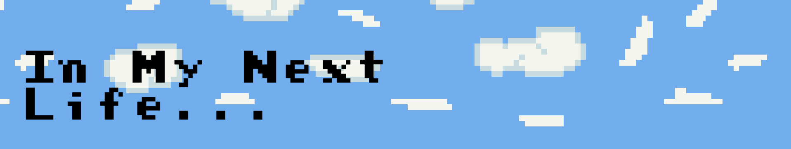

In My Next Life
Synopsis
In my next life combines a small narrative story of an old man being reincarnated along with a mox of some remixed old retro games like a take on flappy bird and the dino game. The game is a short fast paced playthrough allowing the player to experience to small narative but also all stats are tracked and told to the player at the end allowing the player to try get the longest playthrough they can. This game was created for Brackeys game jam 2023.1 in one week with me and my friend.
Key Contributions
Some of my key contributions are as follows
- Coding and implementing all the transitions and changes between narative and the game scenes to allow a smoothe polished playthrough
- Coding the chicken controls and obstacles and impenting all the art from my friend to create a take on the dino game
- Coding the birds movementa nd getting the core flappy bird style game implemeted and working with my friends art an animation
- Tracking player stats with scriptable objects to dispaly their times survived at the end of the game
Gallery